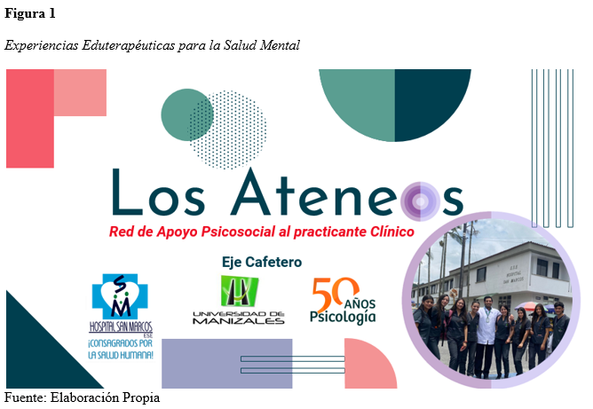
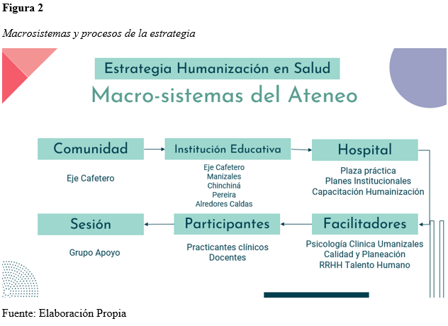
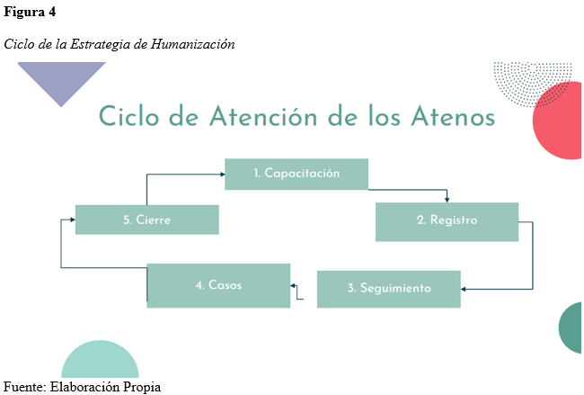
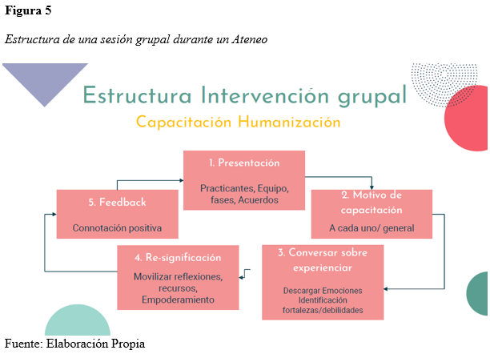

DISEÑO METODOLÓGICO
Dimensiones del modelo pentagonal de estrategia en macro-sistema,
👉🏽Los enfoques de intervención
👉🏽El ciclo atencional de la estrategias
👉🏽La estructura de una sesión
👉🏽Abordaje de casos especÃficos
💎(Anexo Figura n° 1-6)



